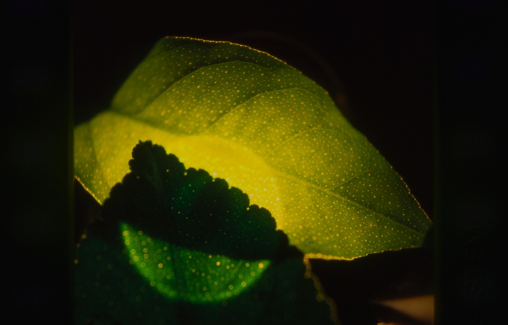
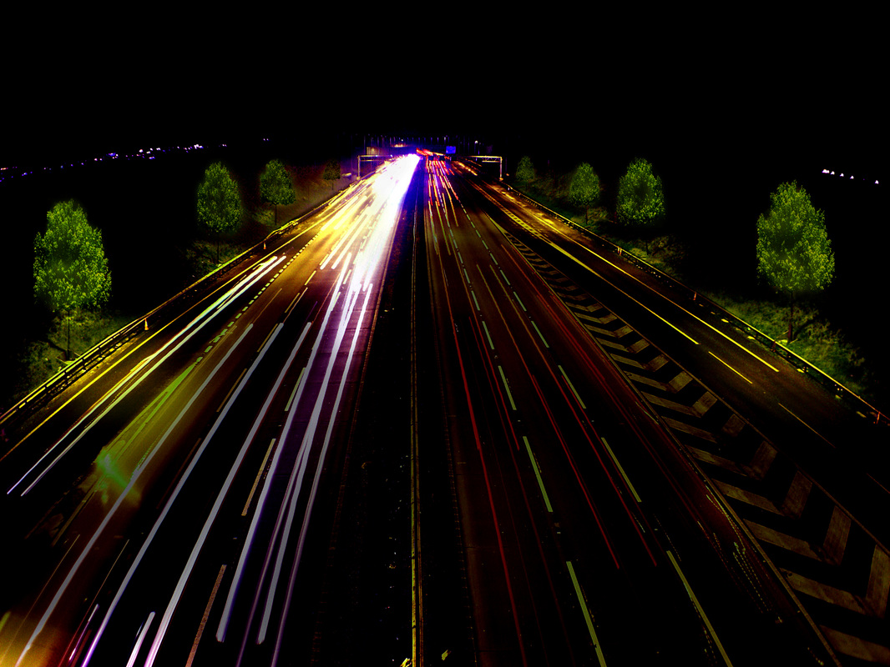

NATURAL LIGHTING
- Alberto Estévez - Genetic Architectures Office, International University of Catalonia
- Barcelona, Spain
- 2003-present
Glowing trees and plant life may replace streetlamps as urban lighting sources.
The "Genetic Barcelona project" involves research on implanting genes that contain luminescent protein production into trees surrounding urban areas. The genes being used come from Aequorea Victoria, a type of jellyfish. Aside from creating a more natural environment, these bioluminescent environments would potentially replace the traditional streetlamp, reducing the waste and cost that comes from using metals, fossil fuels, and industrial fabrication.


Jellyfish species:
Aequorea Vicotira

an example of a tree leaf injected with bioluminescent DNA
future highways may be illuminated with glowing trees instead of streetlights
